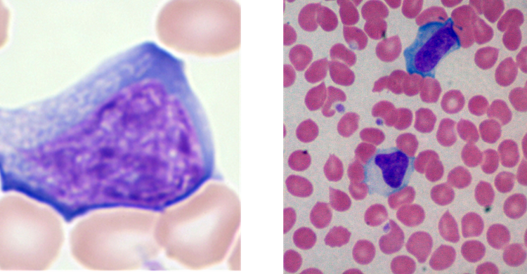

Kommentar:
1. Im Blutbild findet man eine absolute oder relative Lymphozytose mit atypischen reaktiven Lymphozyten im maschinellen Differenzialblutbild bzw. Pfeiffer-Zellen im Blutausstrich.

Abb. 3: Pfeiffer-Zelle im peripheren Blutausstrich Abb. 4: Reaktiv veränderte atypische Lymphozyten
2. In der klinischen Chemie findet sich bei hepatischer Beteiligung eine zwar häufige, aber unspezifische LDH- und Transaminasenerhöhung.
3. Der EBV-Test- Schnelltest weist heterophile IGM-Antikörper im Serum nach, ist jedoch zur alleinigen Nachweisdiagnostik aufgrund seiner geringen Sensitivität und Spezifität nicht geeignet!